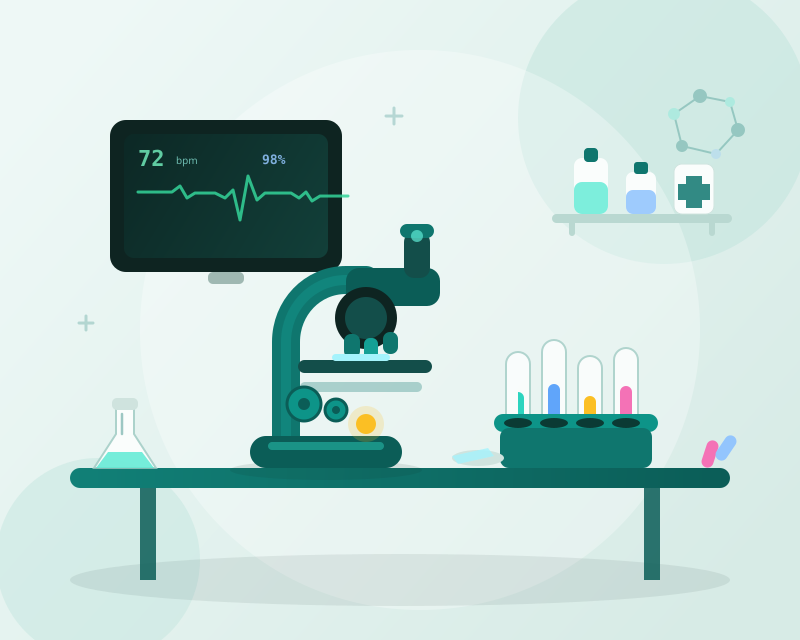

Daniel Ortega Ruiz
Fundador y director técnico
«La tecnología solo tiene sentido cuando está al servicio de las personas.»
Sobre nosotros
Desde 2016 acompañamos a hospitales y clínicas en la gestión segura de su tecnología médica, combinando rigor técnico y cercanía.

Nacimos en 2016 con una misión clara: que la tecnología médica nunca sea un motivo para detener la atención. Hoy trabajamos con hospitales, clínicas y laboratorios para mantener sus equipos operativos, seguros y conformes con la normativa vigente.
Nuestro equipo de ingenieros biomédicos combina conocimiento técnico, planificación y cercanía. Diseñamos planes de mantenimiento a medida, verificamos el desempeño de cada equipo y acompañamos al personal clínico para que pueda centrarse en lo importante: sus pacientes.
¿Quieres conocer nuestras soluciones? Descubre nuestros servicios →
Dirección
Cercanía, criterio técnico y compromiso con la seguridad del paciente al frente de cada proyecto.
Fundador y director técnico
«La tecnología solo tiene sentido cuando está al servicio de las personas.»